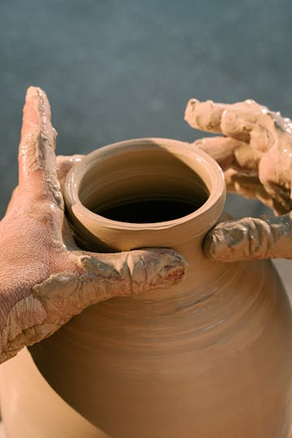
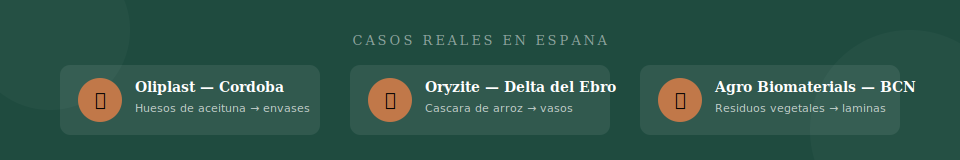
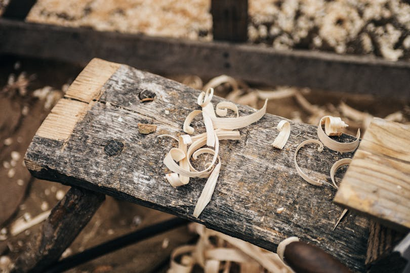
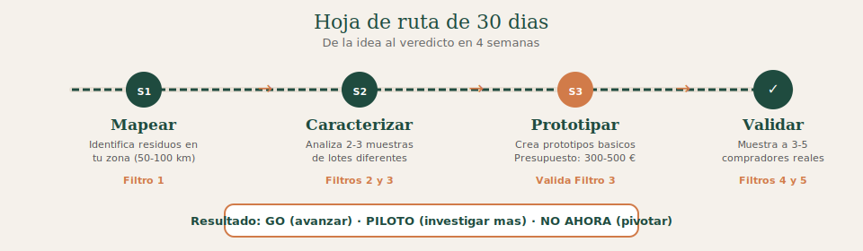

GUÍA PRÁCTICA · 5 FILTROS
¿Tu residuo local puede convertirse en material? Método práctico en 5 filtros
Guía práctica para talleres, marcas artesanas y pymes de producto en España. Con casos reales, semáforos de decisión y hoja de ruta de 30 días para saber si vale la pena antes de invertir.
Un residuo no es un material hasta que pasa 5 filtros. Este artículo te da el método para evaluarlo con criterio antes de gastar un euro. Si al final del proceso tu residuo puntúa verde, tienes un argumento de negocio. Si puntúa rojo, te has ahorrado meses de trabajo a ciegas.
Jose Moscardo
Febrero 2026
12 min de lectura
Tienes un residuo cerca. Quizá son huesos de aceituna de la almazara del pueblo, cáscaras de arroz del Delta del Ebro o recortes textiles del taller de al lado. Y piensas: esto debería ser un material, no basura.
Tienes razón. Pero entre la intuición y el material viable hay un camino que muchos recorren a ciegas, gastando meses y dinero en residuos que nunca llegarán a funcionar como materia prima.
España genera más de 22 millones de toneladas de residuos industriales y agrícolas al año. Muchos de esos residuos ya tienen un segúndo uso documentado. El problema no es la materia prima: es el método para evaluarla.
Para quién es esto: talleres, marcas artesanas y pymes de producto que quieren incorporar residuos locales a su producción. No necesitas ser ingeniera de materiales. Necesitas criterio para decidir antes de actuar.
El camino entre residuo y material empieza con un método claro de evaluación
El contexto normativo que lo cambia todo
La presión para sustituir materias primas vírgenes no es una tendencia: es una realidad regulatoria y de mercado.
La Ley 7/2022 de Residuos ya está en vigor en España con obligaciones de reducción de plástico de un solo uso y responsabilidad ampliada del productor. El Reglamento europeo de envases (PPWR) entra en aplicación en agosto de 2026 con objetivos de reutilización obligatorios. Y los consumidores, especialmente en el segmento premium y artesanal, piden trazabilidad real sobre lo que compran.
El impuesto sobre plásticos no reutilizables (0,45 €/kg) ya está afectando a márgenes de marcas que no han hecho la transición. Cada kilo de plástico virgen que usas tiene un sobrecoste directo que no tenía hace dos años.
Pero muchos proyectos se lanzan a "usar residuos" sin evaluar si ese residuo concreto tiene sentido para su caso. El resultado: prototipos que no escalan, materiales que no cumplen normativa o dependencia de un único proveedor que puede desaparecer.
Los 5 filtros te ayudan a evitar esos callejones sin salida. Un material que pasa los filtros 1-4 pero no el 5 es un commodity. Un material que pasa los 5 es una ventaja competitiva.

Los 5 filtros: de residuo a material con criterio
Filtro 1: Disponibilidad real
Pregunta central: ¿Hay suficiente cantidad, de forma estable, cerca de ti?
No basta con que el residuo exista. Necesitas que esté disponible en cantidad, con regularidad y a una distancia que tenga sentido. No importa lo interesante que sea un residuo si no puedes acceder a él de forma predecible.
Criterios a evaluar:
- Volumen: ¿cuántas toneladas/kg se generan al año en tu zona (radio de 50-100 km)? ¿Es suficiente para tu escala?
- Estacionalidad: ¿es constante o depende de una campaña? Si es estacional, ¿puedes almacenarlo?
- Proximidad: ¿a qué distancia están los puntos de generación? El transporte encarece y contamina.
- Accesibilidad: ¿puedes establecer un acuerdo con el generador? ¿Ya tiene otro destino (biomasa, compost, pienso)? Si compites con usos establecidos, el precio sube.
| Verde |
Ambar |
Rojo |
| Mas de 10 t/año en radio de 50 km |
Entre 1-10 t/año o radio 50-150 km |
Menos de 1 t/año o más de 150 km |
| Generacion constante o estacional predecible |
Estacional con dificultad de almacenaje |
Esporádico o impredecible |
| Acuerdo directo con generador posible |
Necesita intermediario |
Sin acceso claro al generador |
Filtro 2: Calidad y homogeneidad
Pregunta central: ¿El material es consistente y predecible?
Un residuo no es una materia prima hasta que puedes predecir como se va a comportar. La variabilidad es el enemigo silencioso de muchos proyectos. Un residuo puede ser abundante pero inutil si cada lote es diferente.
Criterios a evaluar:
- Homogeneidad: ¿la composición es constante entre lotes? Los residuos agrícolas cambian según variedad, temporada y procesado.
- Contaminantes: ¿tiene sustancias que puedan afectar al producto final (pesticidas, metales, humedad excesiva)?
- Procesamiento previo: ¿necesita limpieza, separacion o pretratamiento? Cada paso añade coste.
- Estándares: ¿existe normativa que el material deba cumplir para tu aplicación?
| Verde |
Ambar |
Rojo |
| Composicion estable entre lotes |
Variaciones manejables con ajustes |
Cada lote es diferente |
| Sin contaminantes relevantes |
Contaminantes eliminables a coste razonable |
Dificiles o caros de eliminar |
| Procesamiento sencillo y asequible |
Requiere inversion moderada |
Complejo o prohibitivo |
Checklist rápido — Filtro 2
He analizado al menos 3 muestras de lotes diferentes
Conozco el rango de humedad, granulometría y composición
He identificado los contaminantes potenciales
Tengo un protocolo de recepción y control de calidad definido

Filtro 3: Viabilidad técnica
Pregunta central: ¿Se puede transformar con tus recursos o con recursos accesibles?
Que un residuo pueda convertirse en material no significa que puedas hacerlo tu, en tu taller, con tu equipamiento actual. Que un material tenga potencial no significa que tu puedas trabajarlo.
Criterios a evaluar:
- Tecnología: ¿quéequipamiento hace falta? ¿Molienda, secado, mezcla, prensado, extrusión? ¿Lo tienes, lo puedes alquilar o necesitas invertir?
- Conocimiento: ¿hay know-how disponible? ¿Existe documentacion técnica, estudios o proyectos previos con ese residuo?
- Escala: ¿puedes empezar en pequeño (prototipo/piloto) o requiere inversion grande desde el inicio?
- Partners: ¿hay centros tecnológicos, universidades o empresas que puedan apoyarte?
- Normativa: ¿el material resultante cumple las normativas aplicables (contacto alimentario, resistencia, seguridad)?
| Verde |
Ambar |
Rojo |
| Piloto viable con baja inversion |
Piloto posible con inversion media |
Solo viable a gran escala |
| Tecnología accesible o ya disponible |
Requiere inversion moderada o partner |
Inexistente o prohibitiva |
| Know-how transferible o documentado |
Necesita formación/asesoría puntúal |
Requiere I+D sin referentes |

La viabilidad técnica se valida en el taller, no en un PowerPoint
Filtro 4: Encaje de mercado
Pregunta central: ¿Alguien va a pagar por esto?
Un material técnicamente viable que nadie quiere comprar es un proyecto de investigación, no un negocio. El mejor material circular del mundo no sirve si no hay demanda.
Criterios a evaluar:
- Demanda existente: ¿hay un mercado que ya busca este tipo de material? ¿O hay que crearlo?
- Precio viable: ¿quéprecio tiene el material convencional que sustituyes? ¿Puedes producirlo a un coste que permita un margen razonable?
- Propuesta de valor: ¿tu material ofrece alguna ventaja real (coste, estética, trazabilidad, narrativa) frente al convencional?
- Canal: ¿tienes acceso a los compradores potenciales (B2B, retail, marketplace)?
| Verde |
Ambar |
Rojo |
| Demanda existente y creciente |
Demanda incipiente, hay que educar |
Sin demanda clara |
| Precio competitivo o premium justificable |
Precio viable con optimizacion |
Coste superior sin argumento de valor |
| Canal de venta identificado y accesible |
Canal existe pero requiere desarrollo |
Sin canal claro |
Checklist rápido — Filtro 4
He identificado al menos 3 compradores potenciales y les he preguntado directamente
Conozco el precio del material convencional que sustituyo
Tengo claro si compito por precio o por valor diferencial
He validado que el cliente final percibe la diferencia
Filtro 5: Trazabilidad y narrativa
Pregunta central: ¿Puedes contar su historia de forma verificable?
En el mercado artesanal y de producto, el origen del material es parte del producto. Pero la narrativa sin datos verificables es greenwashing. Aquí es donde un material circular se convierte en ventaja de marca.
Criterios a evaluar:
- Origen documentable: ¿puedes demostrar de donde viene el material? ¿Hay registros?
- Proceso transparente: ¿puedes explicar como se transforma? ¿Es verificable?
- Impacto cuantificable: ¿puedes medir cuánto residuo evitas, cuánta materia virgen sustituyes, qué reducción de emisiones consigues?
- Historia contable: ¿el origen y el proceso generan una narrativa que conecta con tu público?
| Verde |
Ambar |
Rojo |
| Origen 100% documentable |
Origen parcialmente documentable |
Sin documentacion de origen |
| Impacto medible con datos reales |
Impacto estimable pero no medido |
Sin datos de impacto |
| Historia que conecta con el público |
Posible pero necesita desarrollo |
Sin narrativa diferencial |
Por que este filtro importa tanto: Sin trazabilidad, cualquier claim de circularidad es greenwashing potencial. Con ella, tienes un argumento de venta que ningún competidor con material genérico puede copiar.
Regla de puntúación: GO / PILOTO / NO AHORA
Despues de evaluar los 5 filtros, puntúa cada uno de 0 a 2:
- 2 puntos = señal verde (cumple bien el criterio)
- 1 punto = señal ámbar (cumple parcialmente, requiere trabajo)
- 0 puntos = señal roja (no cumple, barrera importante)

Tu decisión según la puntúación total (/10)
8-10
GO
Material con potencial real. Define plan de accion, busca partners y empieza a producir.
4-7
PILOTO
Potencial con incertidumbre. Haz un piloto acotado: lote pequeño, coste controlado, plazo definido.
0-3
NO AHORA
Barreras demasiado grandes hoy. Revisa en 6-12 meses o busca otro residuo. No es un "no" definitivo.
Importante: una puntúación alta en 4 filtros no compensa un 0 en uno crítico. Si algún filtro es rojo, revísalo antes de avanzar.

Tres casos reales en España
No son proyectos teoricos. Son iniciativas que ya operan y que han pasado estos filtros, cada una a su manera.
340.000 € cofinanciado FEADER
AIMPLAS (Instituto Tecnológico del Plastico) y la Olivarera de los Pedroches (OLIPE) desarrollaron Oliplast: un material plástico biodegradable y compostable fabricado con huesos de oliva.
España produce más de 1,8 millones de toneladas de hueso de aceituna al año. El material se transforma por extrusión o inyección en bandejas, tapones y envases para el propio sector oleícola: circularidad territorial completa.
Filtros destacados: Filtro 1 (disponibilidad masiva y concentrada) y Filtro 5 (trazabilidad y narrativa de territorio).
-72% CO2 vs. plástico convencional
Ecogots fabrica vasos y recipientes reutilizables con Oryzite, un compuesto patentado: 60% cascara de arroz + 40% polipropileno. El Delta del Ebro genera 12 millones de kg de cascara de arroz al año que antes se descartaban.
Reducción de emisiones de CO2 del 72% respecto al plástico equivalente. Premio Nacional de Sostenibilidad 2023. Opera en hosteleria y eventos.
Filtros destacados: Filtro 1 (volumen masivo) y Filtro 5 (narrativa territorial + impacto cuantificado).
Finalista James Dyson Award 2022
Fundada por Berta Daina (Elisava), Agro Biomaterials democratiza la creacion de biomateriales a partir de residuos orgánicos vegetales: pieles de naranja, cascara de cebolla, posos de cafe.
Su kit permite fabricar láminas de biomaterial en casa o en taller. Demuestra que el Filtro 3 no exige industria, exige método.
Filtros destacados: Filtro 3 (viabilidad técnica accesible, piloto con inversion minima) y Filtro 5 (narrativa autentica).

Cada residuo de taller es un material potencial si pasa los 5 filtros
5 errores comunes al intentar revalorizar residuos
🚫
Enamorarse del residuo antes de validar el mercado
Que un residuo sea abundante y transformable no significa que alguien quiera pagar por el material resultante. Valida primero con compradores reales. El Filtro 4 existe por algo.
🚫
Ignorar la logística de recogida
Un residuo "gratuito" deja de serlo cuando tienes que recogerlo de 15 puntos dispersos y pretratarlo. Calcula el coste real puesto en tu taller, no el coste en origen.
🚫
Subestimar la variabilidad entre lotes
Los residuos orgánicos cambian con la temporada y el proceso del generador. Sin protocolo de control de calidad, cada producción es una lotería. El Filtro 2 te obliga a medirlo.
🚫
Comunicar antes de medir
Decir que tu material "reduce el impacto ambiental" sin datos concretos es greenwashing. Mide primero, comunica después. Un claim sin métrica es una promesa vacía.
🚫
Depender de un solo proveedor
Si tu unica fuente cierra o cambia de proceso, tu proyecto se queda sin base. Diversifica las fuentes de residuo o asegura acuerdos a medio plazo por escrito.
Hoja de ruta de 30 días para empezar
No necesitas un año de investigación para saber si vale la pena. Este plan te da una respuesta informada en un mes.

Semana 1
Mapear
Identifica los residuos disponibles en tu territorio (radio 50-100 km). Habla con cooperativas, industrias alimentarias, talleres vecinos. Anota: tipo, volumen estimado, estacionalidad, destino actual.
Aplica el Filtro 1
Semana 2
Caracterizar
Consigue muestras de al menos 2-3 lotes diferentes. Si puedes, envia a laboratorio básico (universidades y centros tecnológicos suelen ofrecer análisis asequibles). Si no, haz pruebas propias: humedad, textura, comportamiento.
Aplica Filtros 2 y 3
Semana 3
Prototipar
Con las muestras más prometedoras, crea prototipos básicos. No busques perfección: busca viabilidad. ¿El material se puede trabajar? ¿Tiene consistencia? Presupuesto máximo: 300-500 €.
Valida Filtro 3
Semana 4
Validar
Muestra los prototipos a 3-5 compradores potenciales. No preguntes si les gusta. Pregunta: ¿lo comprarías? ¿A qué precio? ¿Quénecesitarías para probarlo en tu producción?
Aplica Filtros 4 y 5
Al final de estas cuatro semanas tendrás una respuesta clara: verde (avanzar), ámbar (investigar más) o rojo (pivotar). Cualquiera de las tres te ahorra meses de trabajo a ciegas.
Preguntas frecuentes
¿Necesito formación técnica para evaluar un residuo como material?
No. Los 5 filtros estándiseñados para que cualquier persona con un proyecto artesanal o de producto pueda hacer una evaluación inicial. Para la validación técnica avanzada, si conviene apoyarte en un centro tecnológico o laboratorio.
¿Cuánto cuesta hacer un prototipo con un residuo local?
Un prototipo básico de validación puede hacerse con 300-500 €. Incluye muestras, pruebas manuales y, si es necesario, un análisis básico de laboratorio. No necesitas invertir miles de euros para saber si la idea tiene potencial.
¿Quépasa si mi residuo solo está disponible unos meses al año?
La estacionalidad no invalida el proyecto, pero añade complejidad. Necesitas evaluar si el residuo es almacenable sin degradarse y si puedes acumular stock suficiente para producir todo el ano. El Filtro 1 te ayuda a analizar esto.
¿Puedo usar cualquier residuo orgánico para hacer un biomaterial?
No todos los residuos son aptos. Factores como la humedad, la composición química, los contaminantes y la variabilidad entre lotes determinan si un residuo concreto puede funcionar como materia prima. Por eso el Filtro 2 es tan importante.
¿Como evito hacer greenwashing al comunicar mi material circular?
Mide antes de comunicar. Documenta el origen del residuo, cuantifica el impacto (kg desviados de vertedero, reducción de emisiones comparada) y evita términos vagos como "eco" o "verde". El Filtro 5 te guía en la construcción de una narrativa verificable.
Conclusion
Convertir un residuo local en material no es cuestión de buenas intenciones. Es cuestión de método. Los cinco filtros no te dicen si la idea es bonita; te dicen si es viable.
Si has llegado hasta aquí y quieres aplicar este método a un residuo concreto de tu territorio, descarga la guía completa con las fichas de evaluación y los semáforos listos para rellenar.